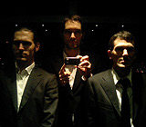
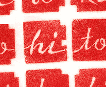

<!--
Segments:
	1: tokyo<br />
	2: jp<br />
	3: about<br />
	4: <br />
-->

<!--
Segments:
	1: tokyo<br />
	2: jp<br />
	3: about<br />
	4: <br />
-->

<!DOCTYPE html PUBLIC "-//W3C//DTD XHTML 1.0 Transitional//EN" "http://www.w3.org/TR/xhtml1/DTD/xhtml1-transitional.dtd">
<html xmlns="http://www.w3.org/1999/xhtml" xml:lang="en" lang="en">

<head>
		<title>hitotoki : 町の文学地図 : ヒトトキについて</title>

		<meta http-equiv="Content-Type" content="text/html; charset=utf-8" />
		<meta name="DESCRIPTION" content="The who, what, when, why and how of Hitotoki.org. All about the site, it's creators and becoming an editor of your city." />
		<meta name="KEYWORDS" content="hitotoki, lit, tokyo, new york, newyork, stories, google maps, mapping, Chris Palmieri, Craig Mod, Paul Baron, Chin Music Press, AQ Design" />
		<meta name="AUTHOR" content="The Hitotoki Tokyo Boys" />		
		
		<link rel="icon" href="../../../hitotoki_hi_icon.png" type="image/vnd.microsoft.icon">
		<link href="../../../css/master_jp.css" rel="stylesheet" type="text/css" />
		<link href="../../../css/individual_jp.css" rel="stylesheet" type="text/css" />
		<link href="../../../css/city-switcher.css" rel="stylesheet" type="text/css" />
		<link href="../../../css/about_jp.css" rel="stylesheet" type="text/css" />
		
		<script src="../../../mint/index-js.js" type="text/javascript"></script>
</head>

<body>

<div id="wrapper">

	<div id="masthead">
			<h1><a href="../">Hitotoki</a></h1>
			<span id="sitemotto">Tokyo Stories from Curious Outsiders</span>

		<ul id="sitewide-nav">
			<li id="nav-about"><span>About Hitotoki</span></li>
			<li id="nav-blog"><a href="../../../blog/">Blog</a></li>
			<li id="nav-editorial"><a href="../../../editorial/">Become an editor for your city</a></li>
			<li id="nav-submissions"><a href="../submissions/">Submissions</a></li>
		</ul>

		<ul id="city-switcher">
			<li id="tokyoen"><a href="../../">Tokyo (en)</a></li>
			<li id="tokyojp"><a href="../">Tokyo (ja)</a></li>
			<li id="nyc"><a href="../../../newyork/">New York (ny)</a></li>
			<li id="london"><a href="../../../london/">London</a></li>
			<li id="paris"><a href="../../../paris/">Paris</a></li>
			<li id="shanghai"><a href="../../../shanghai/">Shanghai</a></li>
			<li id="sofia"><a href="../../../sofia/">Sofia</a></li>
			<!--li id="bulgarian"><a href="/classic/sofia/bg/">Bulgarian</a></li-->
		</ul>
	</div>
			
	<div id="mainbody">
			
		<p id="concept"><a href="../submissions/">Hitotokiとは、思い出と場所を結びつけ、ストーリーと地図を連動させた、新しい文学サイトです。物語の投稿について</a></p>

		<div id="about-hitotoki">
			<h2 id="txt-the_word">Hitotokiという言葉</h2>
			<p>日本語では、「ひとつの時（一時）」と書いて、「ヒトトキ」と読みます。昔の時間区分では、今の約二時間。現在では、短い時間を意味する言葉として使われています。ただし、「短い時間」とは、とても主観的なものです。嫌いな人と食事をとる、その苦々しいほどにゆっくりと進む時間もヒトトキです。好きな人と共に過ごす、その瞬く間に過ぎ去る一夜もヒトトキです。いずれにせよ、「つかの間」を意味する、はかない時間を指す言葉です。</p>
						  
			<h2 id="txt-the_site">Hitotokiというサイト</h2>
			<p>2007年5月、東京にて、<a href="http://aka.me">ポール・バロン</a>、<a href="http://craigmod.com">クレイグ・モド</a>、<a href="http://iixii.net">クリス・パルミエリ</a>によって、ウェブサイトHitotokiはオープンしました。Hitotokiは、東京とシアトルに拠点を置く出版社<a href="http://chinmusicpress.com">Chin Music Press</a>と、東京に拠点を置くウェブデザイングループ<a href="http://aqworks.com">AQ</a>による、コラボレーション作品です。</p>
		
			<h2 id="txt-our_fearless_editors">我々の恐れを知らぬ編集者たち</h2>
			<p><a href="../"><strong>Hitotoki東京・日本語版</strong></a>は 、<a href="http://shinjo41.exblog.jp/">新城健一</a>の容赦ない鉄拳によって編集されています。彼は、東京・三ノ輪在住のフリーライターで、小説、ビデオゲームガイドブック、日本伝統芸能（能楽）紹介など、古今の日本文化について執筆しています。また、大手コンテンツポータルサイトのウェブプロデュースを務め、企業などのウェブサイト構築におけるコンサルティング業務も請け負っています。</p>
			
			<p><a href="../../../newyork/"><strong>Hitotokiニューヨーク・英語版</strong></a>は、容貌魁偉なる<a href="http://mattrand.com/">マット・ランド</a>によって編集されています。彼は、ニューヨーク・ブルックリン在住のライターです。2001年にペンシルバニア大学を卒業した後、フォーブス誌にてリポーターとライターを4年間務めました。現在では、ニューヨークに本拠を置く米国有数の投資銀行および証券会社と提携し、公正なリサーチを行う日々を送っています。</p>
			<p><a href="../../"><strong>Hitotoki東京・英語版</strong></a>は、ポール、クリス、クレイグによって編集されています。</p>
		
			<h2 id="txt-design_notes">デザインノート</h2>
			<p><strong>Hitotokiのロゴマーク</strong>は、4個の刻印によって構成されています。これらは、長瀬映子によって篆刻されました。朱色に染まる刻印の形をよく見ると、刻まれた「hitotoki」というローマ字のみならず、「ヒトトキ」というカタカナを見出すことができるでしょう。さらに、その刻印と刻印の狭間を見つめると、街を上空から眺めたときの、ビルと街路のようにも見えてきます。</p> 
			<p>それぞれのカタカナの文字は、刻まれたローマ字に対応しています。文字をバラバラにすることによって、同じロゴをさまざまな配列で提示することが可能となります。我々の435ページにおよぶアイデンティティ・スタイル・ガイドは、こうした方法を考慮しています。</p>

			<p>Hitotokiのサイト上にある<strong>ディスプレイ用のフォント</strong>は、シビル・ハグマン製作の<a href="http://vllg.com/Kontour/Odile/mudTyper+Weights/">Odile</a>や、エリック・オルソン製作の<a href="http://www.processtypefoundry.com/typefaces/maple/">Maple</a>を使用しています。また、<strong>写真などの画像</strong>については、Flickrサイトに集められている、<a href="http://www.flickr.com/creativecommons/">クリエイティブコモンズ・ライセンスの画像</a>を使用しています。</p>
			
			<h2 id="txt-technical_hobbity_bobbity">テクニカル・ホビティ・ボビティ</h2>
			<p>Hitotokiを構築する上で欠かせないものが３つありました。<a href="http://expressionengine.com">Expression Engine</a>と<a href="https://www.google.com/apis/maps/">Google Maps API</a>。そしてドトールのアイスコーヒーです。我々は、その３つを取り込み、Hitotokiを作り上げました。</p>
			
			<h2 id="txt-feeds_feeds_feeds">RSSフィード</h2>
			<p>
				RSS2.0は、いかがですか？　以下をクリックしてください。
				<ul id="feed_list">
					<li><a href="/classic/full_feed/">東京＆ニューヨーク(英語版)</a></li>
					<li><a href="/classic/tokyo/feed/">Tokyo (英語版)</a></li>
					<li><a href="/classic/tokyo/jp/feed/">Tokyo (日本語版)</a></li>
					<li><a href="/classic/newyork/feed/">New York (英語版)</a></li>
					<li><a href="/classic/dc/feed/">Washington, DC (英語版)</a></li>
					<li><a href="../../../london/">London (英語版)</a></li>
				</ul>
			</p>
			
		</div>
	
	<div id="soapbox">
	
	<div id="contact-info">
		<p id="email"><strong>ラブレターお待ちしています：</strong><br /><a href="mailto:&#119;&#104;&#97;&#116;&#64;&#104;&#105;&#116;&#111;&#116;&#111;&#107;&#105;&#46;&#111;&#114;&#103;" title="Hitotoki Feedback" >what@hitotoki</a></p>
		<p id="snailmail"><strong>危険物以外の送り先：</strong><br />
		〒112-0006<br />
		東京都文京区小日向2-20-4<br />サニーサイドフラッツ301<br />
		Hitotoki　宛
		</p>
		<h3 id="txt-hitotoki_editorial">Hitotokiの編集</h3>
		<p><strong>東京(英語版)：</strong>: Email <a href="mailto:&#116;&#111;&#107;&#121;&#111;&#64;&#104;&#105;&#116;&#111;&#116;&#111;&#107;&#105;&#46;&#111;&#114;&#103;" title="Hitotoki Feedback" >ポール、クレイグ、クリス</a><br />
		<strong>東京(日本語版)：</strong>: Email <a href="mailto:&#115;&#104;&#105;&#110;&#106;&#111;&#64;&#104;&#105;&#116;&#111;&#116;&#111;&#107;&#105;&#46;&#111;&#114;&#103;" title="Hitotoki Feedback" >新城健一</a><br />
		<strong>ニューヨーク(英語版）</strong>: Email <a href="mailto:&#109;&#97;&#116;&#116;&#64;&#104;&#105;&#116;&#111;&#116;&#111;&#107;&#105;&#46;&#111;&#114;&#103;" title="Hitotoki Feedback" >マット・ランド</a><br />
		<strong>ロンドン（英語版）</strong>: Email <a href="mailto:&#111;&#108;&#105;&#64;&#104;&#105;&#116;&#111;&#116;&#111;&#107;&#105;&#46;&#111;&#114;&#103;" title="Hitotoki Feedback" >オリ</a></p>
	</div>
	
	<h3 id="txt-editors_wanted"><a href="../../../editorial/">あなたの町の編集者募集中</a></h3>
	<p>我々は、より多くの都市のHitotokiをオープンさせるため、編集者を探しています。たとえば、<strong>札幌、大阪、名古屋、京都、福岡など</strong>、愛すべき都市のHitotokiをつくってみませんか？</p>
	<p>各都市の編集者は、それぞれの都市ごとに、物語を募集し、必要に応じて編集し、サイトへアップロードするなどの作業が要求されます。</p>
	<p>もし、Hitotokiの編集に興味をもたれたならば、メールにてご連絡ください。 <a href="mailto:&#109;&#101;&#119;&#114;&#105;&#116;&#101;&#103;&#111;&#111;&#100;&#64;&#104;&#105;&#116;&#111;&#116;&#111;&#107;&#105;&#46;&#111;&#114;&#103;" title="Hitotoki Editor Inqury" >mewritegood@hitotoki</a>.</p>
	<h3 id="txt-spread">Spread Hitotoki</h3>
	<p style="margin-bottom:6px;">あなたのサイトやブログにぜひ Hitotoki のバナーを貼ってください！</p>
	
	<div class="badge"></div>
	<textarea class="getbadge" readonly="readonly" rows="2" cols="10" onclick="this.select();"><a href=""></a></textarea>
	
	<div class="badge"></div>
	<textarea class="getbadge" readonly="readonly" rows="2" cols="10" onclick="this.select();"><a href=""></a></textarea>
	
	<h3 id="other-stuff">The Other Stuff We Do</h3>
	<p class="senden" id="gmb"><a href="http://goodbyemadamebutterfly.com/">Goodbye Madame Butterfly</a></p>
	<p class="senden" id="tab"><a href="http://www.tokyoartbeat.com/shop">Tokyo Art Beat T-shirts</a></p>
	<p class="senden" id="facetime"><a href="http://www.aqworks.com/2007/07/23/facetime-1-type-designer-eric-olson-on-klavika/">Facetime Type Designer Interviews</a></p>
	
	<p id="about-sponsor">Hitotokiサイトのスポンサードへのお問い合わせ： <a href="mailto:&#115;&#112;&#111;&#110;&#115;&#111;&#114;&#115;&#64;&#104;&#105;&#116;&#111;&#116;&#111;&#107;&#105;&#46;&#111;&#114;&#103;" title="Hitotoki Sponsor Inqury" >sponsors@hitotoki</a>.</p>
			
	</div>

	</div><!--main_body-->


		<div id="footer">
		<p id="aq_chinmusic"><a href="http://aqworks.com" id="footer_aq">An AQ &ndash;</a><a href="http://craigmod.com/" id="footer_chinmusic">Craig Mod fiasco</a></p>
		<p id="copyright">Hitotoki.org &copy; 2007&ndash;2018 AQ &amp; Craig Mod - Content &copy; their creator<br /> When in doubt, <script type="text/javascript"> document.write('<a href="mailto:tokyo' + '@' + 'hitotoki.org">' + 'ask</a>');</script></p>
	</div><!--footer-->
	
	<!-- Start Quantcast tag -->


<noscript>

</noscript>
<!-- End Quantcast tag -->

</div><!--holder-->

<script src="https://www.google-analytics.com/urchin.js" type="text/javascript">
</script>
<script type="text/javascript">
_uacct = "UA-503722-8";
urchinTracker();
</script>

 	</body>
</html>


